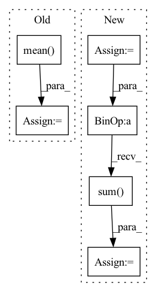

Pattern ID :479
Before Change
mean_matrix = self.mean_table[top:down + 1, left:right + 1, :]
std_matrix = self.std_table[top:down + 1, left:right + 1, :]
x_mean = mean_matrix.mean(dim=0).mean(dim=0).unsqueeze(0).unsqueeze(-1).unsqueeze(-1) //self.kernel * // should deal with the boundary
x_std = std_matrix.mean(dim=0) .mean(dim=0).unsqueeze(0).unsqueeze(-1).unsqueeze(-1) //self.kernel *
//x_mean = x_mean.unsqueeze(-1).unsqueeze(-1)
//x_std = x_std.unsqueeze(-1).unsqueeze(-1)
After Change
assert x.shape[0] == 1 // currently, could support batch size = 1 for kernelized instance normalization
top = y_anchor
down = y_anchor + 2 * padding + 1
left = x_anchor
right = x_anchor + 2 *padding + 1
x_mean = self.padded_mean_table[:,:,top:down + 1, left:right + 1] // 1, C, H, W
x_std = self.padded_std_table[:,:,top:down + 1, left:right + 1] // 1, C, H, W
assert self.kernel.shape == x.mean.shape
x_mean = x_mean * self.kernel // 1, C, H, W
x_std = x_std * self.kernel // 1, C, H, W
x_mean = x_mean.flatten(start_dim=2).sum(dim=2) // [1, C, H, W] -> [1, C, H * W] -> [1, C]
x_std = x_std.flatten(start_dim=2).sum(dim=2) // [1, C, H, W] -> [1, C, H * W] -> [1, C]
x_mean = x_mean.unsqueeze(-1).unsqueeze(-1) // [1, C] -> [1, C, 1, 1]
x_std = x_std.unsqueeze(-1).unsqueeze(-1) // [1, C] -> [1, C, 1, 1]In pattern: SUPERPATTERN
Frequency: 3
Non-data size: 6
Instances Fragment ID: 1722906
Project Name: kaminyou/urust
Commit Name: 63159b688ad053bad7fd41015170f131d547439d
Time: 2022-01-27
Author: kaminyouho@aetherai.com
File Name: models/kin.py
M Class Name: KernelizedInstanceNorm
N Class Name: KernelizedInstanceNorm
M Method Name: forward(5)
N Method Name: forward(5)
M Parent Class: nn.Module
N Parent Class: nn.Module
M File Name: models/kin.py
N File Name: models/kin.py
M Start Line: 83
M End Line: 96
N Start Line: 89
N End Line: 115
Before Change
log_prob = self.logsoftmax(inputs)
targets = torch.zeros_like(log_prob).scatter_(1, targets.unsqueeze(1), 1)
targets = (1 - self.epsilon) * targets + self.epsilon / self.num_classes
loss = (- targets * log_prob).mean( 0) .sum()
return loss
After Change
self.log_softmax = nn.LogSoftmax(dim=1).cuda()
def forward(self, y, labels):
log_prob = self.log_softmax(y)
labels = torch.zeros_like(log_prob).scatter_(1, labels.unsqueeze(1), 1)
labels = (1 - self.epsilon) * labels + self.epsilon / self.num_classes
loss = (- labels * log_prob).mean(0).sum()
return loss
class TripletLoss(nn.Module): Fragment ID: 1722686
Project Name: thuml/transfer-learning-library
Commit Name: c87131a7350967d7af5f9167eae4befc0f57b157
Time: 2021-08-24
Author: chenbx18@mails.tsinghua.edu.cn
File Name: common/vision/models/reid/loss.py
M Class Name: CrossEntropyLabelSmooth
N Class Name: CrossEntropyLossWithLabelSmooth
M Method Name: forward(3)
N Method Name: forward(3)
M Parent Class: nn.Module
N Parent Class: nn.Module
M File Name: common/vision/models/reid/loss.py
N File Name: common/vision/models/reid/loss.py
M Start Line: 30
M End Line: 33
N Start Line: 79
N End Line: 82
Before Change
logit_softmax = F.softmax(logit, dim = 1)
diff = -(logit.diag().view(-1, 1).expand_as(logit) - logit)
loss = torch.mean( logit_softmax * (torch.sigmoid(diff) + torch.sigmoid(logit ** 2)))
// add regularization
loss += self.lambda_ * torch.mean(logit_softmax * (logit ** 2))
return loss
////////////////After Change
positive_mask = ~negative_mask
positives = logits_scores.diag().view(-1, 1).expand_as(logits_scores)
diff = positives - logits_scores
penalization = torch.sigmoid(logits_scores ** 2)
loss = torch.sigmoid(-diff ) + penalization
// set to zeros the difference scores of positive targets of the same session
loss = loss.masked_fill(positive_mask, 0)
// Average over the nb of negative sample per
loss = loss.sum( 1) / negative_mask.sum(1)
return torch.mean(loss)
Fragment ID: 1722400
Project Name: nvidia-merlin/transformers4rec
Commit Name: da9442ba125855b2a0630c905ad4da0def19be70
Time: 2021-02-21
Author: gmoreira@nvidia.com
File Name: codes/loss_functions.py
M Class Name: TOP1_max_reg
N Class Name: TOP1
M Method Name: forward(3)
N Method Name: forward(2)
M Parent Class: nn.Module
N Parent Class: nn.Module
M File Name: codes/loss_functions.py
N File Name: codes/loss_functions.py
M Start Line: 118
M End Line: 123
N Start Line: 93
N End Line: 109